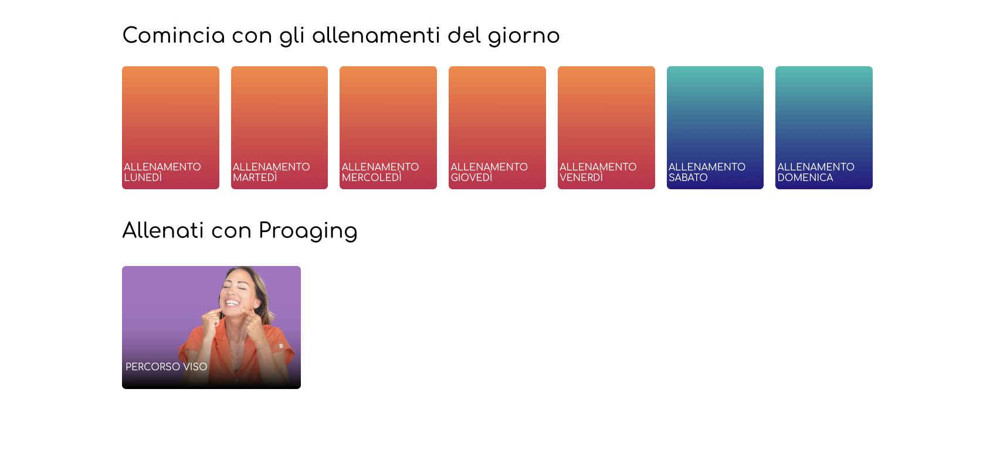
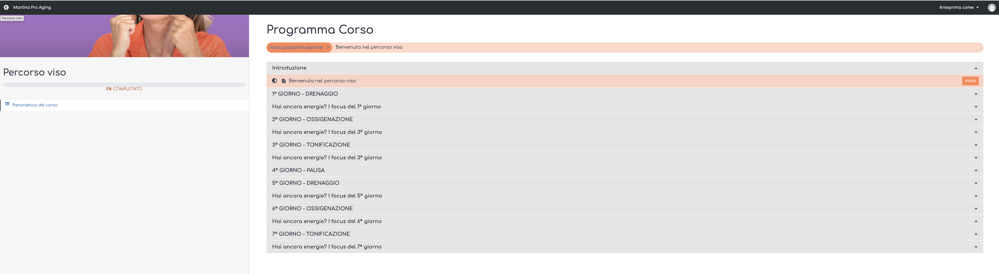
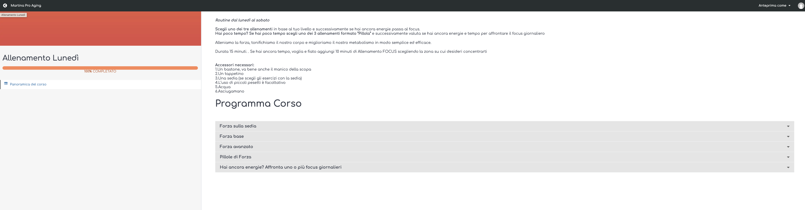

Si appoggia al brief comunicazione, non lo ripete
Il brief comunicazione che hai gia' (niccolobsoul.github.io/mpas-brief-comunicazione) resta il framework principale — target Genoveffa, gerarchia emotiva con sicurezza al centro, parole si/no, hook lines, ponte YouTube→piattaforma.
Questo brief aggiunge tre cose:
- Lo scope del copy interno alla piattaforma per i 24 giorni del test
- Come sara' strutturata la piattaforma al 4 maggio
- Gli screenshot di ogni superficie da toccare con la voce corrispondente
Come sara' strutturata la piattaforma al 4 maggio
Quello che segue e' lo stato che le utenti troveranno al go live. Serve a inquadrare lo scope del copy qui sotto.
Dopo il login l'utente entra su una pagina unica di ingresso con due card: Percorso Viso (ciclo 7 giorni tematici) e Percorso Corpo (lun-dom, struttura nuova, uniforme con Viso).
L'utente clicca Viso o Corpo → atterra direttamente sulla pagina Programma Corso del percorso scelto (card giornaliere + barra percentuale). Dentro la pagina del singolo giorno trova i 3 livelli (Sedia / Base / Avanzato) + Pillole + Focus.
Sopra i due percorsi c'e' un header di navigazione con 3 sezioni: Auto-test / Approfondimenti / Parola degli Esperti. Il copy di quelle 3 pagine e' in scope.
Perche' la tranche 1 copre tutto il visibile, non solo le intro
Nei 24 giorni di test (4-28 mag) entrano prima le Pioneer Premium Marzo (dal 4), poi il pubblico bSoul piu' ampio (dall'11). Tutto cio' che vedono deve essere coerente nel linguaggio pro-aging.
Non possiamo avere pezzi nuovi in linguaggio pro-aging (le intro che scrivi tu) mescolati a etichette ancora in linguaggio da palestra ("Allenati con Pro Aging", "ALLENAMENTO LUNEDI"). Sarebbe un mix incoerente proprio nella finestra di giudizio del brand.
Quindi la tranche 1 e' larga: 13 voci obbligatorie + 3 raccomandate. La tranche 2 si sposta a dopo il test (onboarding post-settembre, microcopy dipendente da decisioni in sospeso, pagine non accessibili ora).
Superfici da toccare
Ogni blocco qui sotto e' una pagina o un elemento della piattaforma: screenshot dello stato attuale ed elenco preciso di cosa scrivere.
Pagina di ingresso (post-login)
Oggi titolata "Comincia con gli allenamenti del giorno" — prima cosa che l'utente vede dopo il login.

Titolo nuovo della pagina di ingresso
Oggi: "Comincia con gli allenamenti del giorno". Proponi il nuovo titolo in linguaggio pro-aging, coerente col fatto che la pagina non parla piu' di "giorni" ma dei due percorsi.
Intro testuale pagina di ingresso (nuova)
Accoglie l'utente e introduce i due percorsi prima che scelga. Voce prima persona Martina. ~80-120 parole.
Label del blocco percorsi
Oggi: "Allenati con Proaging" — rinominare in linguaggio pro-aging.
Card "Percorso Viso" — label + microcopy breve
Label della card + eventuale sottotitolo o CTA se ti serve per orientare la scelta. Stringato.
Card "Percorso Corpo" — label + microcopy breve (card nuova)
Stessa forma della card Viso. Complementare, non alternativa — il copy deve far sentire Viso + Corpo come due meta' dello stesso percorso.
Pagina Programma Corso — Percorso Viso
L'utente arriva qui dopo aver cliccato la card Viso. Ciclo 7 giorni tematici: Drenaggio → Ossigenazione → Tonificazione → Pausa.

Intro testuale Programma Corso Viso (nuova)
Apre la pagina del percorso. Oggi la sezione "Introduzione" e' vuota. Voce prima persona Martina, ~80-120 parole.
Label delle 7 card giorni (Viso)
Oggi: "1° GIORNO – DRENAGGIO", "2° GIORNO – OSSIGENAZIONE", ... "7° GIORNO – TONIFICAZIONE". Verifica la coerenza pro-aging della formulazione, riformula se serve (es. tema piu' accogliente davanti al numero del giorno).
Pagina Programma Corso — Percorso Corpo
Pagina da costruire. Stessa struttura del Viso (header + barra % + intro + card giornaliere) — lo screenshot sotto e' il Viso, usalo come riferimento visivo.
Intro testuale Programma Corso Corpo (nuova)
Apre la pagina del percorso settimanale (lun-dom) con 3 livelli + Pillole + Focus. Voce prima persona Martina, ~80-120 parole. Complementare all'intro Viso: deve "parlare con" quella.
Label delle 7 card giorni (Corpo)
Oggi: "ALLENAMENTO LUNEDI", "ALLENAMENTO MARTEDI", ... fino alla domenica — fuori regola pro-aging. Sostituisci con formulazione allineata al linguaggio del brand.
Header post-login — 3 sezioni di navigazione
Sopra le card Viso + Corpo, header con 3 sezioni. I video sono gia' pronti — scrivi solo intro minime di accoglienza + orientamento. Lunghezza stringata.
Intro pagina "Auto-test"
Sezione con auto-valutazioni video (postura, cellulite, ecc.). L'utente guarda un video e si auto-valuta. Accoglienza + orientamento al video, stringato.
Intro pagina "Approfondimenti"
Martina spiega il perche' di posture, modi di respirare, ecc. Accoglienza + orientamento al video.
Intro pagina "Parola degli Esperti"
Video di Martina con professionisti (urologo, fisiatra / osteopata, nutrizionista, geriatra, nutrizione dello sport, psicoterapeuta). Accoglienza + orientamento al video.
Eventuale microcopy dell'header (valutare in telefonata)
Se il formato UI dell'header richiede sottotitoli, hover tooltip o descrizioni brevi delle sezioni — aggiungile. Se l'header e' solo label + icona, basta la label.
Naming "Auto-test" — decisione Martina 22 apr
La sezione si chiama "Auto-test", non "Test". Motivazione: tre concetti diversi rischiano di collidere sulla piattaforma → tre parole diverse per tenerli separati:
- "Auto-test" = le auto-valutazioni video di questa sezione
- "L'accesso" = i 60 giorni di fruizione contenuti
- "Test di maggio" = fase commerciale interna, mai visibile all'utente
Messaggio di benvenuto della piattaforma
Touchpoint 04 del brief comunicazione. Oggi esiste un messaggio generico, va rivisto nel tono. Non ha screenshot dedicato: valutiamo in telefonata se collassarlo nell'intro pagina ingresso o tenerlo distinto (es. banner, popup prima volta).
Messaggio di benvenuto
Oggi formula base: "Benvenuta nel tuo percorso pro-aging. Inizia da qui." Da rivedere nel tono — brevissimo, accogliente, come Martina che ti dice "vieni, ti faccio vedere". Decidiamo in telefonata se e' un elemento a se' stante o parte dell'intro (voce 2).
Microcopy giorno (se la capacita' lo permette)
Tre elementi accessibili dentro la pagina del singolo giorno. Non sono bloccanti per la tranche 1 — se capacita' ridotta, slittano. Qui lo screenshot della pagina giorno attuale.

Microcopy barra % completamento
Formula minima Corpo + Viso. Esempi: "X di Y giorni completati" (Corpo) / "Ciclo 1, giorno 3" (Viso). La logica "pesante" (badge binario, contatore cicli) dipende da decisioni Martina ancora aperte → tranche 2. Per ora bastano formule minime leggibili.
Popup di pausa (Domenica Corpo / Giorno 4 Viso)
Oggi: "Un giorno di pausa e relax tutto per te!" — verifica se mantieni o riformuli.
Label selettore livelli dentro il giorno
Oggi negli accordion: "Forza sulla sedia", "Forza base", "Forza avanzato", "Pillole di Forza". Verifica coerenza pro-aging e proponi riformulazione se serve.
Prima persona Martina, come negli script video
Martina parla direttamente alla persona che entra. Non e' una descrizione oggettiva del percorso — e' un invito, una presa per mano. Tono accogliente, diretto, caldo, concreto. Come se Martina ti dicesse "vieni, ti faccio vedere".
Approvazione voce: la voce viene validata da Martina quando consegni la bozza (Niccolo' le gira il Google Doc il 29 apr). Se qualcosa ti sembra borderline rispetto a come parla Martina, segnalalo con un commento — decide lei in revisione.
80-120 parole per intro, orientative
Se per tenere l'impatto ne servono meno (60) o piu' (150), scrivi la versione che funziona. Lo discutiamo in telefonata.
Per titoli, label card, microcopy: stringati, chiari, non didascalici. Il contesto visivo (card colorata, icona) fa meta' del lavoro.
Schema consigliato per le intro
- 1-2 frasi di apertura (la persona si sente accolta)
- 2-3 frasi che presentano il percorso (beneficio prima, meccanismo dopo)
- 1 frase che orienta all'azione (cosa fa adesso)
Niente "sei tra le prime" in piattaforma
Il copy delle pagine interne resta anche dopo il test di maggio. Quindi: nessun riferimento al Pioneer Premium Marzo, nessun "sei tra le prime", nessuna esclusivita' temporale, nessun countdown. Quei messaggi stanno nelle email di invito, non qui.
Scrivi un copy che funziona oggi per Pioneer e funziona domani per chi entrera' dopo.
Sta nel footer, lo scrive l'avvocato
Claim redatto dal legale con invito a consultare il medico per patologie particolari ed esclusione di responsabilita'. Arrivera' come blocco fisso quando il legale lo consegna (Niccolo' lo recupera via Claudio).
Tu non scrivi, non interpreti, non proponi posizione. Posizione decisa: footer.
Riprende il brief 1, solo le regole critiche qui
Le regole complete (Parole si / Parole no) stanno nel brief comunicazione. Qui solo le critiche per il copy di queste superfici.
- Pro-aging, mai anti-age
- Cura / rituale / percorso / programma, mai allenamento / workout / training / fitness
- "L'accesso" per il periodo di 60 giorni, mai "test"
- Mai contrapposizione esplicita YouTube ↔ piattaforma
- Beneficio prima, meccanismo dopo
- Differenziatore corpo + viso insieme = USP principale
- Payoff: "Ogni giorno, un po' piu' tu"
- Claim sotto payoff: non ancora chiuso con Martina (task 25 apr). Scrivi senza claim → lo integriamo dopo
Tre parole diverse per tre concetti diversi — decisione Martina 22 apr
Se ti capita di dover scegliere la parola, chiediti: "parlo di un video di auto-valutazione, di 60 giorni di contenuti, o della fase commerciale?"
Dal brief al go live
| Quando | Cosa | Chi |
|---|---|---|
| 22 apr | Brief + telefonata di chiarimento | Niccolo' + Silvia |
| 28 apr sera | Consegna bozza (Google Doc) | Silvia |
| 29 apr | Review voce | Martina (via Niccolo') |
| 29-30 apr | Review operativa | Niccolo' |
| 30 apr | Feedback consolidato (o OK finale) | Niccolo' → Silvia |
| 1-2 mag | Eventuale rilavoro | Silvia |
| 3 mag | Implementazione dev | Alberto + Niccolo' |
| 4 mag | Go live — primo accesso Pioneer Premium Marzo | — |
| 11 mag | Apertura pubblico bSoul piu' ampio | — |
| 28 mag | Fine test | — |
Se lo scope non regge, dimmelo oggi
Lo scope della tranche 1 e' ampio: 13 voci obbligatorie + 3 raccomandate. La deadline e' 28 apr sera.
Se dopo questo brief + telefonata lo scope non e' sostenibile nei tempi, dimmelo oggi, non il 26. Possiamo:
- Spostare i raccomandati a tranche 2 (il minimo obbligatorio resta)
- Allungare la consegna di 1-2 giorni, se tu + Martina + io comprimiamo la revisione
- Segmentare la consegna (prima le 3 intro percorsi + titolo + header, poi le label card e rinomine)
Meglio saperlo ora che costruire su una timeline che salta.
Brief + telefonata, no Meet
- Questo brief resta online come riferimento
- Telefonata di chiarimento: Niccolo' ti chiama dopo che apri il link, leggiamo insieme al telefono
- Consegna copy (28 apr sera): Google Doc unico con ogni voce etichettata per la pagina / elemento a cui si riferisce (es. "Intro pagina ingresso", "Titolo card Viso"), cosi' l'implementazione e' lineare
Quando hai letto, chiamami
Se qualcosa qui non torna, lo sistemiamo al telefono prima che tu inizi a scrivere. Un abbraccio.
— Niccolo'